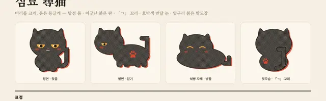
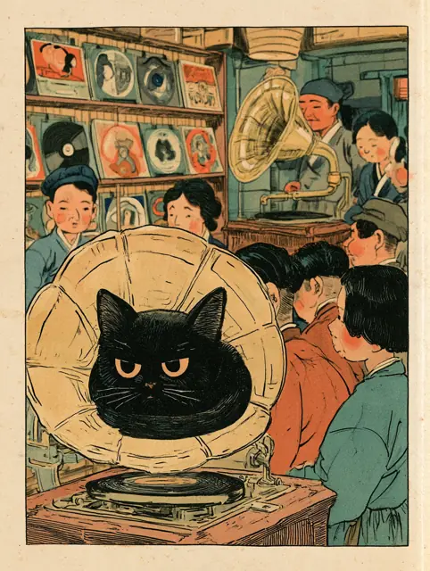
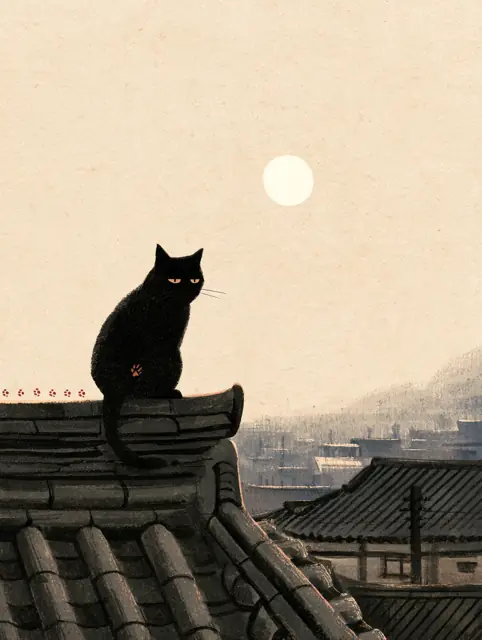
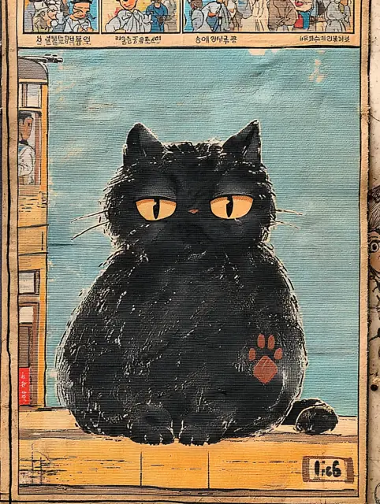
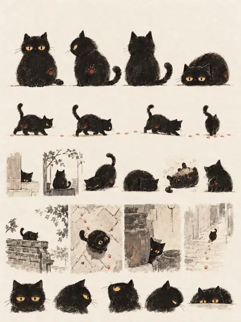
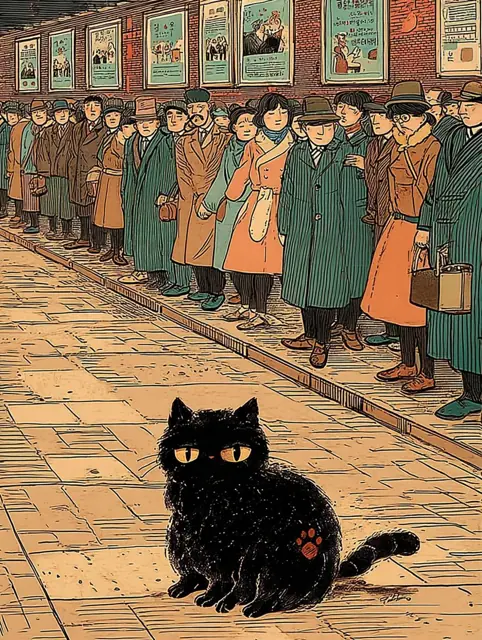
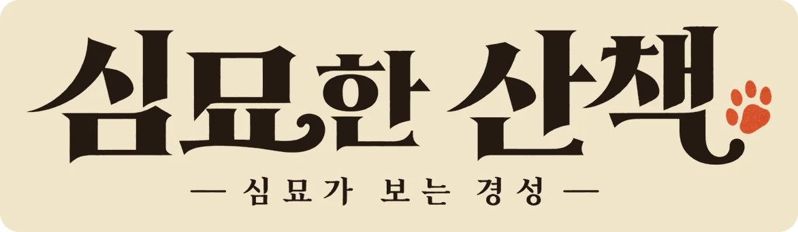
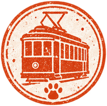

심묘한 산책 · 만든 이야기
글을 모르는 고양이의 눈으로
경성을 다시 걷기
1. 왜 고양이인가
국가기록원에 따르면 광복 직후 12세 이상 인구의 약 78%가 글을 읽지 못했습니다. 신문 · 광고 · 간판으로 기록된 「경성」은, 사실 그 시절 대부분의 사람에게 읽을 수 없는 흰 종이였습니다.
경성야록 본편이 「사람이 쓴 지면」 속 사건을 따라간다면, 심묘한 산책은 그 지면을 읽지 못하는 존재의 눈높이로 같은 도시를 걷습니다. 글 대신 냄새 · 소리 · 발바닥으로 도시를 아는 고양이 — 그 고양이가 광고면 수배지에서 달아난 「심묘」입니다.
사람의 기록은 흑백, 고양이가 본 경성은 컬러.
고양이에게 벽보는 흰 종이, 사람 눈으로 바꾸면 그 자리에 진짜 지면.
2. 경험의 구조
- 심인광고 수배지 268호를 누르면 수배지가 찢어지고 심묘가 빠져나옵니다.
- 손그림 산책 지도에서 1899~1937년 경성 여덟 곳을 순서 없이 고릅니다.
- 장소는 흑백(사람의 기록)으로 시작합니다. 그림 속 반짝이는 자리(심묘 눈 · 킁킁 · 귀 · 사람 눈) 가운데 두 가지를 열면 장소 도장이 찍히고 「빠진 글자」 하나와 수첩 쪽지가 생깁니다.
- 장소마다 10초 놀이(전차 뛰어오르기, 주파수 맞추기, 바늘 내려놓기 …)로 멸치를 모아 스티커를 엽니다.
- 여덟 글자를 모으거나 진짜 자정에 오면 편집국이 열리고, 「심묘는 오늘도 잇소」 문장이 완성됩니다.
- 수배 사유가 풀리고, 글자를 가린 1930년 지면 → 78% → 문자보급 · 브나로드 운동으로 이어지며 끝납니다.
- 엽서 · 결과 카드 · 배경화면 · 스티커를 선물로 받아 갑니다.
3. 캐릭터를 고정하기까지
같은 고양이가 모든 장면에 똑같이 나와야 캐릭터가 됩니다. 이미지 생성은 장마다 고양이가 달라지는 것이 가장 큰 문제였고, 아래 순서로 고정했습니다.






방법: 시트에서 정면 한 마리만 잘라 캐릭터 참조(--oref)로, 첫 산책편 그림 세 장을 색감 참조(--sref)로 넣고, 모든 장면에 같은 시드(--seed 1930)와 같은 고양이 설명 문장을 썼습니다. 그림 속 가짜 글자는 「빈 간판」으로 지웠습니다 — 고양이 눈에는 원래 흰 종이이기 때문입니다.
4. 디자인 시스템
신문지 크림
#F2E6CB
#F2E6CB
먹
#231C16
#231C16
인주 주홍
#C64F25
#C64F25
청록
#5F9A8F
#5F9A8F
짙은 청록
#2F5D57
#2F5D57
겨자 · 심묘 눈
#D9A647
#D9A647
자정
#14302E
#14302E






- 글꼴: 제목 · 말풍선은 명조(Noto Serif KR), 단추 · 안내는 고딕(Noto Sans KR). 손글씨 글꼴은 쓰지 않습니다.
- 도장: 가운데 볼록살이 고양이 머리 모양인 발바닥 — 장소 · 자정 · 엽서 소인에 같은 질감으로 반복합니다.
- 말투: 심묘의 말만 옛 말투(「모르겟소」), 사실 설명은 쉬운 현대어.
- 움직임: 깜빡임 · 섬광 없음. 「움직임 줄이기」를 켠 기기에서는 연출을 끕니다.
5. 사실 원칙
- 그림은 모두 재현(「그림 · 재현」 표시), 심묘와 수첩 쪽지는 지어낸 이야기입니다.
- 장소 · 연도 · 지면 · 수치는 출처가 있는 사실만 씁니다. 자료를 못 찾은 냄새는 「아직 모릅니다」로 남겼습니다.
- 실제 사건 피해자 이야기와 섞지 않습니다. 노래 가사는 싣지 않습니다.
주요 출처
- 국가기록원 「문맹퇴치」 · 「단성사」 · 「동대문운동장」
- 한국민족문화대백과사전 「경성방송국」 · 「목포의 눈물」
- 『황성신문』 1899. 5. 5 · 9. 11 / 『매일신보』 1926. 10. 1 · 1930. 10. 24 · 1937. 11. 11 / 『삼천리』 1933. 10
- 서울역사박물관 (탄소 마이크 · 사진엽서 · 『화신백화점』) · 서울역사편찬원
- 경북매일 황광해 맛칼럼(2019. 10. 8) · 위키트리 「호떡」 · 조선일보 「모던 경성」(2022. 11. 12) · 국민일보(2018. 5. 23) · 이길훈(2016)
6. 만든 사람
- 기획 · 아트 디렉션 · 캐릭터
- 김소이
- 그림
- Midjourney · ChatGPT 이미지 생성 (김소이 디렉션)
- 개발 · 자료 조사 보조
- Claude
- 함께
- 경성야록 팀